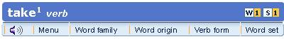
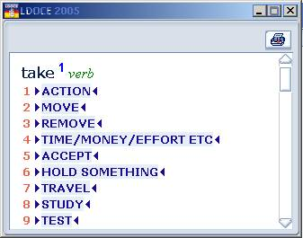

Note: entries in this Mac app show every section directly, so there is no Menu button to open. What follows describes the original CD-ROM navigation.
Some larger entries with many different meanings have a menu to help you find your way around quickly. Click on the 'Menu' button in the blue toolbar at the top of the entry.

A pop-up window will open with links to all the different parts of the entry. Click on the link to go straight to that part of the entry. In the example below, if you are interested in how the word take is used to talk about tests, you would click on number 9.
